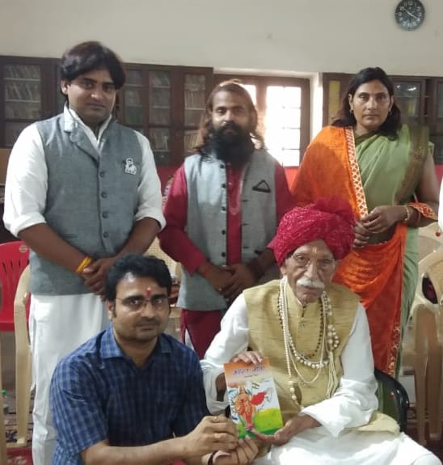

जब आप Zero Quantum Frequency पर स्थिर होते हैं, तो अनावश्यक विचार शांत होकर लक्ष्य की तरंगें जागृत होती हैं।
Zero Quantum Frequency reveals the space within where mental weight dissolves and life flows peacefully.
गंधर्व आनंद एक बहुआयामी व्यक्तित्व हैं, जिनका जीवन भारतीय संस्कृति, अध्यात्म और मानवीय उत्थान के प्रति समर्पण का प्रेरणादायक उदाहरण है। वे लेखक, चिंतक, अध्यात्म मार्गदर्शक, समाजसेवी और उद्यमी के रूप में जाने जाते हैं तथा मानवता को अपने कर्म का केंद्र मानते हैं।
उनका उद्देश्य सदैव मानव को उसकी मूल चेतना - शांति, प्रेम और सत्य - में जागृत करना रहा है। उनका विश्वास है कि जीवन की जटिलताओं का समाधान तब संभव है जब मनुष्य अपने भीतर के स्रोत से जुड़ जाए।
उन्होंने अनेक ग्रंथों की रचना की है जिनमें ‘सारथी का संदेश’, 'सृजन-माला' , ‘नचिकेता का तीसरा वर’, ‘सनातन के सात अध्याय’, ‘भारत माता’, 'Zero Quantum Frequency', 'करना कुछ भी नहीं' और ‘The Burning Life’ प्रमुख हैं। उनके लेखन में वेदांत दर्शन, आत्मविकास और आधुनिक जीवन के बीच एक अद्भुत सेतु दिखाई देता है।
उनकी पुस्तक “The Burning Life” जलवायु परिवर्तन और मानव चेतना के संबंध को प्रस्तुत करती है, जबकि “सारथी का संदेश” जीवन संघर्षों में आध्यात्मिक मार्गदर्शन प्रदान करती है।
उनकी पुस्तक "करना कुछ भी नहीं" साधना का सरल मार्ग बताती है- अहंकार शांत कर साक्षीभाव में स्थित होकर स्वाभाविक शांति और आत्मबोध प्राप्त करना।
वे मानते हैं कि सच्ची सफलता बाहरी उपलब्धियों से नहीं, बल्कि आंतरिक संतुलन से आती है। ध्यान, आत्म-चिंतन और मौन साधना उनके जीवन का महत्वपूर्ण भाग है।
वर्ष 2024 में उन्हें BRICS CCI द्वारा उनकी पुस्तक “सारथी का संदेश” के लिए सम्मानित किया गया तथा “Leader of Bharat Award 2024” से भी अलंकृत किया गया।
SRINAGAR, J & K

